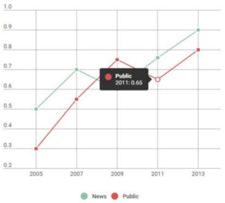

The Big Idea
There are a lot of topics that people from different regions react differently to. Whether it is a political topic, a slang that is local to certain region, etc, the chance is people from different region will have different attitude toward certain topics. NewsBox is a program that captures this information in visually compelling way, through a choropleth map.
Getting Started
NewsBox uses a number of dependencies that requires installation before running the program. First install, python-twitter module, which is used to fetch tweets.
$ pip install python-twitter
Then follow install indico PyPi package, which is used to run a sentiment analysis.
$ pip install indicoio
You will have to get api keys for Twitter API and Indico API. Create your own application in Twitter Apps page and get API key. You can follow indico's installation guide to get indico api key.
Last step in setting up NewsBox is to create a configuration file. Create config.py with following code in it.
indico_key = '<Your Indico API Key>'
consumer_key = '<Your Twitter Consumer Key (API Key)>'
indico_secret = '<Your Twitter Consumer Secret (API Secret)>'
access_token_key = '<Your Twitter Access token>'
access_token_secret = '<Your Twitter Access token secret>'
How NewsBox Works
The beauty of NewsBox is its structural simplicity. As you can see in the very high level code structure diagram below, there are only three major components of the program.
 First component of the program is collection of tweets based on specific search term and geographical region, performed using Twitter API and python-twitter Twitter API wrapper for python. After compiling tweets using Twitter API, Indico's machine learning API is used to run a sentiment analysis on tweets. Lastly, NewsBox generates a SVG (scalable vector graphics) file of a choropleth map that represents the different sentiment toward certain keyword in the different regions of the US.
First component of the program is collection of tweets based on specific search term and geographical region, performed using Twitter API and python-twitter Twitter API wrapper for python. After compiling tweets using Twitter API, Indico's machine learning API is used to run a sentiment analysis on tweets. Lastly, NewsBox generates a SVG (scalable vector graphics) file of a choropleth map that represents the different sentiment toward certain keyword in the different regions of the US.
Designer Templates
We’ve crafted some handsome templates for you to use. Go ahead and click 'Continue to layouts' to browse through them. You can easily go back to edit your page before publishing. After publishing your page, you can revisit the page generator and switch to another theme. Your Page content will be preserved.
Creating pages manually
If you prefer to not use the automatic generator, push a branch named gh-pages to your repository to create a page manually. In addition to supporting regular HTML content, GitHub Pages support Jekyll, a simple, blog aware static site generator. Jekyll makes it easy to create site-wide headers and footers without having to copy them across every page. It also offers intelligent blog support and other advanced templating features.
Authors and Contributors
You can @mention a GitHub username to generate a link to their profile. The resulting <a> element will link to the contributor’s GitHub Profile. For example: In 2007, Chris Wanstrath (@defunkt), PJ Hyett (@pjhyett), and Tom Preston-Werner (@mojombo) founded GitHub.
Support or Contact
Having trouble with Pages? Check out our documentation or contact support and we’ll help you sort it out.
Results
Screenshots of what our program produces.
Evolution of NewsBox
NewsBox wasn't always the glamorous tweet-sentiment-choropleth-map-producing program you see now. Once upon a time, NewsBox had a very different mission: We wanted to see if there was a causal relationship between the positivity of news sources and public opinion towards different topics. We even created a mock-up of what our program might produce.
After our first technical review, we came up with a better idea. Rather than produce line graphs of average media and Twitter polarity over time towards a certain search term, we could produce a choropleth map that compared the polarity of tweets from different regions in the US. We scrapped the News part of NewsBox and began working on our new idea. We started with a blank map of the US in the form of an SVG file.
We made changes to our original code so we could collect Tweets based on location, and we wrote new code to produce a choropleth map given average polarity values for the four main regions of the US.
We went into our second Technical Review looking mainly for feedback on how we should improve the data visualization part of our project (How can we make the map pretty?). We received and incorporated a number of good suggestions, such as adding numberical values to the map, making the map pop up when the program runs, and adding the search term to the map picture (so when you save the map, you know what search term it represents). These suggestions resulted in a much improved visualization of our data, as you can see below.
And here we are now.
Credits
- Twitter's API wrapper for Python, python-twitter fetches the tweets.
- Indico's API analyzes the sentiment of tweets.
- Beautiful Soup edits the SVG file.